An impressive team.
Check us out!
 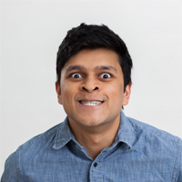
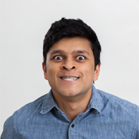
Vedant Swarup
Industrial Design | 3rd Year
Hey I'm Vedant, I'm one of the lead coordinators of the conference. I'm from Culver City, California and I'm an Industrial Design major. I wanted to be a part of a discipline where one never stops learning, I like watching lots of shows and movies. In my free time I like to work of personal projects like making prop replicas from the movies like Iron Man.
 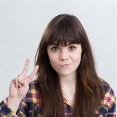
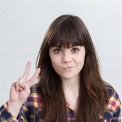
Hannah Abele
Industrial Design | 3rd Year
Hi! I'm Hannah, and I'm a co-coordinator for what will be my third Thought at Work! I handle the conference's logistics as well as a little bit of everything else. Thought at Work has provided me with so many amazing opportunities to learn about design, teamwork, event planning, and thinking outside the box, and I'm excited to see us grow bigger every year. I'm an ID student from Harrisburg, PA, and in my free time I can be found writing, drawing comics, and drinking lots of coffee.


Mick Bartholomew
Industrial Design | 3rd Year
My name is Mick Bartholomew, I'm a third year Industrial Design major with a minor in Entrepreneurship. I'm from Amherst, Ohio, just outside of Cleveland. I joined the Thought At Work crew as a freshman to get involved with the student design community both at RIT and surrounding schools, as well as professionals. Attending the 2012 conference had such a positive impact on my education I felt I was missing out on something great if I didn't try to help. I have had the opportunity to reach out to professionals and students about Thought At Work, as well as help drive the direction of the conference. Be sure to say “Hi” if you see me around, or reach out to me if you need anything. You can find my information through my LinkedIn.


Abbey Smith
New Media Design | 3rd year
Heyo, I’m Abbey! I am a third year New Media Design major at RIT. I’m from Syracuse, NY and love vegan pizza. I also enjoy running, listening to music and making cool shit. I am heading up the website with two other awesome people. This is my first year working on the TAW Team and it’s been an amazing experience.


Courtney Boire
New Media Design | 3rd year
Hi, I’m Court! I’m a third year New Media Design student from the real Upstate New York. Literally, Canada and Vermont are my backyard. I pretty much think everything is hilarious, so I’m always laughing at something.
This year I am a part of putting together this awesome website you’re looking at right now for the upcoming conference. When i’m not swimming in all the projects I always seem to get myself into, I’m a big fan of traveling and catching up on my sleep.


Melissa Samworth
New Media Design | 3rd year
I’m a New Media Design major and I have an unhealthy obsession with wireframes, beautiful type, and Pinterest. This is my first year on the Thought At Work team, and I’m digging it. I’m on the web team with Abbey and Courtney! Design aside, I like trees, obscure flavors of tea, and kittens.
 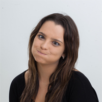
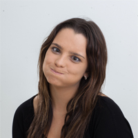
Leah Hall
Graphic Design | 3rd Year
I love everything about the work of design and cannot wait to be more involved as I grow as a designer. Advertising through design is a special interest of mine; grabbing the attention of the audience in a split second so that they want to learn more about what is being said.
I am a part of the design team for Thought At Work. I help with the branding that is associated with the conference throughout different applications. Within the graphics team we develop our concepts around what Thought At Work is all about.


Tim Torres
New Media Design | 2nd Year
Hi, my name's Tim Torres. Some people call me Tim Torres. I'm from Hershey, Pennsylvania (as in the chocolate), and this is my first year on the Thought at Work team and I hope to contribute a lot in the coming years. I'm a New Media Design major, which I love because we learn a huge range of things.
Some of my interests and hobbies include photography, web design and development, 3D modeling and animation, motion video and special effects, drawing, painting, and making various electronics projects. I am also a sprinter on the RIT Track and Field team and participate in various intramurals like soccer, frisbee, volleyball, dodgeball, and broomball.
I like to read (as if I even had the time) and watch movies, but one of my greatest loves is biking. I'm a member of New Media Club, InterVarsity, PUB Club, and I live in Computer Science House. Doge forever.
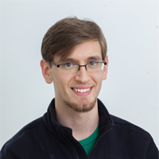

Brian Keyes
Industrial Design, Graphic Design | 4th Year
Currently a fourth-year student, I am a designer, both Industrial and Graphic, minoring in Marketing. I'm from Poughkeepsie, NY and my hobbies include photography, along with cycling, and bread-baking.
I've been involved with Thought at Work for two almost years now focusing on social media, school outreach, branding and directional signage, and many other various thing.


Joe Hodapp
Graphic Design | 4th year
Designer from Kentucky here! As part of the Graphics Team, my job is to give the Thought At Work brand a new definition and make it appear as exciting and inspiring as the actual event. This team is a great chance to collaborate with other creatives to put on a great show come October.


Devon Cherry
New Media Design | 3rd Year
Hello, my name is Devon and I am a 3rd year New Media Design major, minoring in Environmental Studies.
I had such a great experience attending Thought At Work last year so I knew getting involved would be a great opportunity to collaborate with interesting and passionate people in other majors. I'm happy to be part of the team and look forward to this year's conference!
I am from Torrance, California, a beach city in the south bay of Los Angeles, but I love being on the east coast. Some things that make me happy are sunflowers, hiking, and train rides.
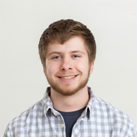

Caleb Payne
New Media Design | 2nd year
I'm a second year New Media Design major from Erie, PA, and I'm really excited to learn about everything that goes into the conference. In my free time I listen to music, play soccer here and there, drink coffee, and design T-shirts. I'm hoping to take on more responsibility with the project in years to come. For now, I'm doing what I can to help out.


Jack Wilson
New Media Design | 4th year
My name is Jack Wilson and I am currently a senior New Media Design student at RIT. I am responsible for motion graphics for Thought At Work and also pitch in wherever I can. I love motion graphics and everything to do with New Media.


Will Johnston
Computer Science | 2nd year
I’m a sophomore Computer Science major from New York City. I’ve been programming and designing since I was a young kid. I joined the team hoping to learn as much as I can about design and organizing an actual event.
 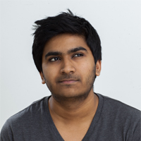
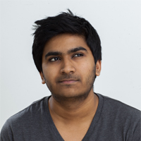
Sudarshan Ashok
New Media Design | 2nd year
Hi, My name is Sudarshan and I'm a second year New Media Design student. I decided to help out at TAW because I thought it would be a good way to get event organization skills and learn more about the design industry at the same time.


Amy Sanderson
Interior Design | 4th year
Hi, my name is Amy, I'm an Interior Design major with a minor in Business Administration and I'm from Honolulu, Hawaii. I got involved with Thought at Work this year because I want to help interior design become a part of the conference, which I'm really excited for! The opportunity to learn and experience so much in one weekend is an amazing concept, which is also why I decided to join the TAW team.
I love to travel, eat good food, and learn, so I went to study Interior Architecture in Copenhagen, Denmark last fall which was why I was unable to attend the previous conference. However, that experience helped me realize how important TAW is because of its role to expose us students to new and thought provoking ideas without even leaving campus.
 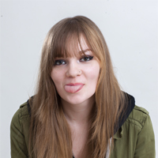
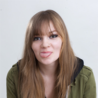
Hailey Thorp
New Media Design | 3rd year
Hi, I’m Hailey! I am a third year New Media Design student from Philadelphia PA. In my free time, I like reading, going to concerts and drawing. This is my first year in Thought at work, and I’m extremely excited for the opportunity to be a part of such a cool event.


Alex Crandall
New Media Design | 3rd year
Hey! I'm Alex, but everyone just calls me Crandall. I'm a 3rd Year New Media Designer from a small town just outside of Albany, NY. This is my first time working with the Thought at Work Conference. I am really looking forward to working with all aspects of the creative community here at RIT to put on the best conference possible.

Kelly Hulburt
New Media Design | 2nd year
Hi, I'm Kelly! I'm a second year New Media Design student from right here in Rochester, NY. After attending the Thought at Work conference last fall and talking with team members, it was clear to me that the creative energy and collaboration of Thought at Work was something unique that I wanted to be a part of. I loved the idea of students working together to create something much bigger than themselves. As a team member this year, I am looking forward to designing graphics, meeting new people, and helping out in any other way that I can. My goal is to enhance my skills as a designer while also contributing to an enriching conference experience.